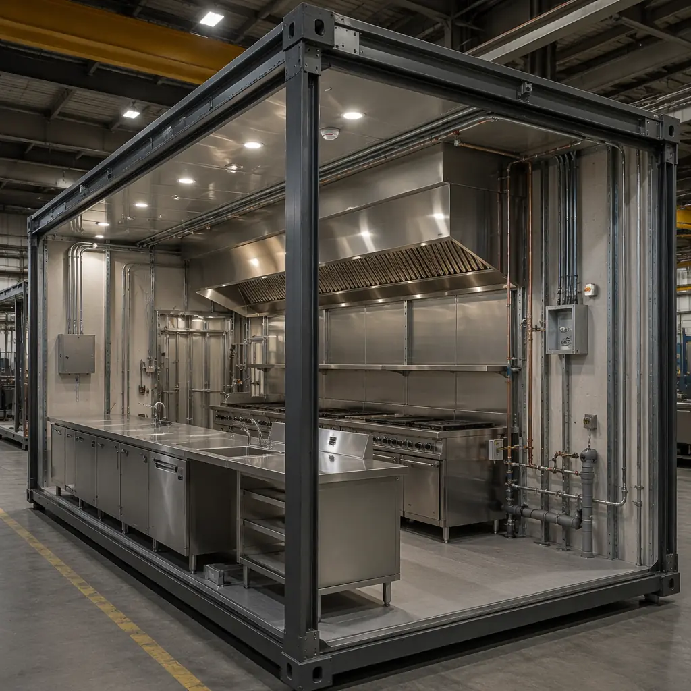
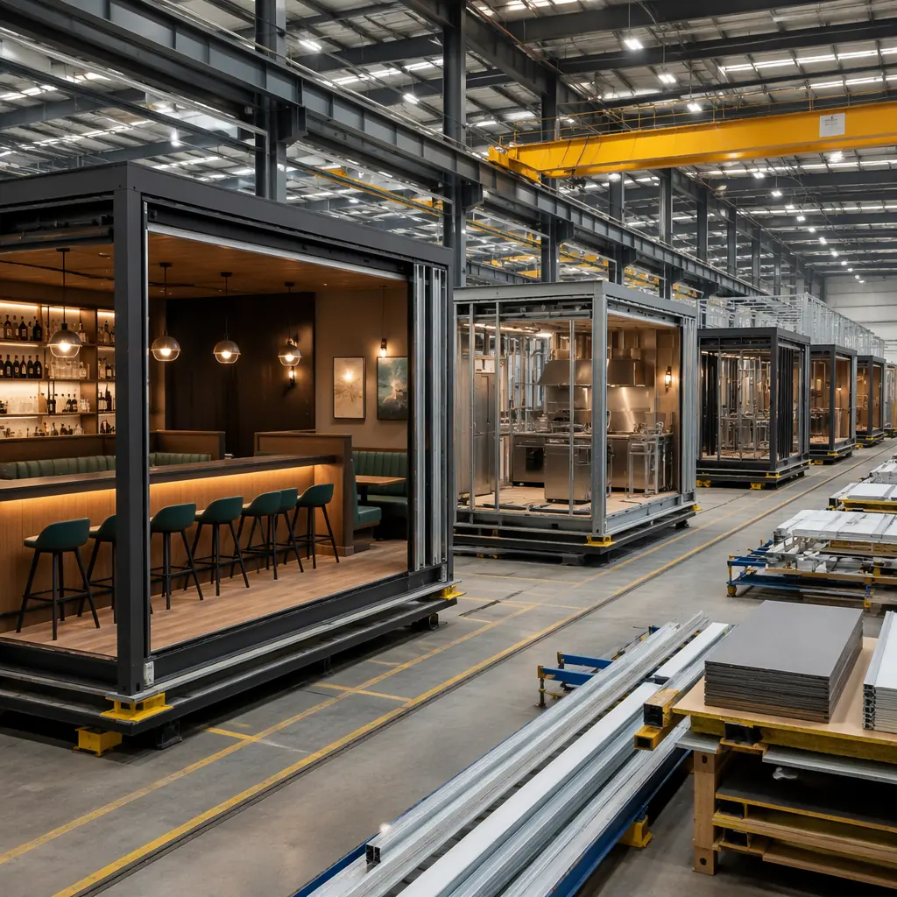
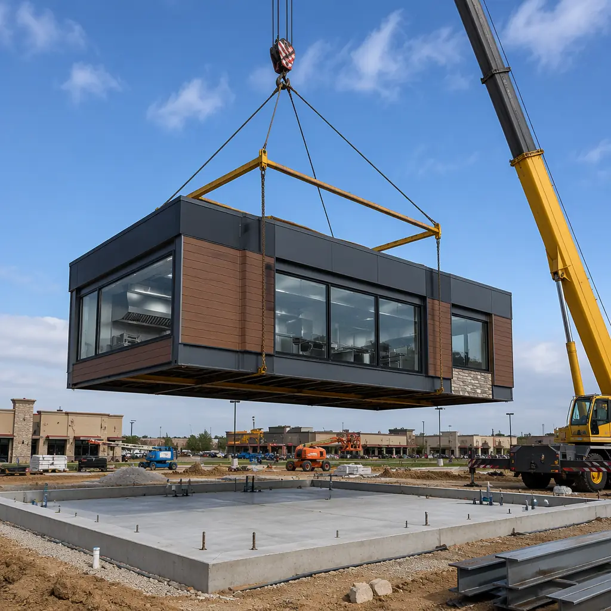

Restaurant construction is a race against carrying costs. Every month a restaurant site sits under construction is a month of lease payments, management overhead, and zero revenue from a location that was supposed to open last quarter. For franchise operators scaling from 5 to 50 locations, the math is unforgiving: a 6-month delay on a $1.2 million build-out burns $180,000 in lease and overhead before the first customer walks through the door, assuming a $30,000/month blended carry cost. Modular construction changes this equation by delivering code-compliant restaurant modules — with integrated commercial kitchens, MEP rough-ins, and finished dining areas — in 12–16 weeks from contract to turnover, compared to 24–36 weeks for conventional site-built restaurant construction.

The Restaurant Construction Bottleneck: MEP Coordination
Commercial kitchens are the most MEP-dense spaces in commercial construction outside of hospitals and data centers. A typical 2,000 sq ft restaurant kitchen contains 8–12 plumbing fixtures (hand sinks, prep sinks, 3-compartment sink, mop sink, dishwasher, ice machine, grease trap), 6–10 electrical circuits (refrigeration, cooking equipment, hood controls, fire suppression), HVAC exhaust at 1,200–2,500 CFM through a Type I grease hood, and makeup air at 80% of exhaust volume. Coordinating these systems in a site-built environment requires sequential trade work — plumber, then electrician, then HVAC, then hood installer — with each trade discovering conflicts that force the previous trade to re-work. The result is a 6–8 week MEP rough-in phase where the project stands still for 30% of the time while trades wait for each other.
Modular construction eliminates this sequential bottleneck. Kitchen modules are fabricated with all MEP rough-ins installed and coordinated in the factory using a BIM model that resolves every clash before a single pipe is cut. The module ships with plumbing stub-outs labeled for site connection, electrical panels pre-wired to equipment locations, and HVAC ductwork installed to the hood collar. On site, the trades connect to the module, not to each other. For a broader treatment of how modular MEP integration works across building types, our MEP systems guide provides the technical framework.

Health Code Compliance: Factory-Built to NSF Standards
Health department plan review is the single largest source of pre-construction delay for restaurants. A conventional submission goes through 2–4 revision cycles as the health inspector flags issues that the architect didn't anticipate: insufficient hand sink placement, improper floor drain slope, missing indirect waste connections, or wall finishes that don't meet cleanability requirements. Each revision cycle adds 2–3 weeks to the approval timeline.
MODURA's restaurant modules incorporate health code requirements at the design platform level, not the individual-project level:
- Floor surfaces. Factory-installed quarry tile or resinous flooring with 1/8-inch-per-foot slope to floor drains, coved base at all wall-to-floor junctions (6-inch cove, heat-welded seams). This meets NSF/ANSI 2 and FDA Food Code §6-201.11 requirements without the field-installation variability that causes health department rejections.
- Wall finishes. FRP (fiberglass-reinforced plastic) panels or stainless steel sheet up to 48 inches above the floor in all food preparation and warewashing areas, with factory-sealed joints that prevent moisture penetration behind panels — the primary source of mold-related health code violations in site-built kitchens.
- Hand sink placement. Pre-engineered hand sink locations within 25 feet of each food preparation station per FDA Food Code §5-203.11, with factory-installed hot water supply (minimum 100°F per §5-202.12) and indirect waste connections that eliminate cross-connection risks.
- Grease management. Factory-sized and pre-plumbed grease interceptor (typically 1,000–2,000 gallon for full-service kitchens, 500–750 gallon for fast-casual) with accessible cleanout and sample port, located outside the kitchen module but connected via pre-routed waste piping.
For operators navigating the permitting process, our permitting and zoning guide covers how modular construction interacts with local building departments, including the increasingly common pre-approved modular submittal programs that some jurisdictions offer.
Franchise Rollout: Standardization at Scale
Franchise operators face a unique challenge: build 20, 50, or 200 identical restaurants across different jurisdictions, different general contractors, and different construction labor markets, and deliver a consistent customer experience at every location. Conventional construction makes consistency expensive — each site requires a separate GC, separate subs, and separate quality control effort. Variation is inevitable, and the brand suffers when Location #47 doesn't look like Location #3.
Modular construction's factory platform solves franchise consistency at the manufacturing level:
- Identical kitchen modules. A franchise operating 100 locations can order 100 identical kitchen modules from the same factory line, with the same MEP layout, the same equipment package, and the same finish specifications. The module that ships to Phoenix is the same module that ships to Portland, built by the same workforce using the same quality system.
- Local-content dining rooms. The back-of-house module is standardized; the front-of-house dining module can be customized for local market conditions (exterior cladding, signage integration, outdoor seating configuration) without affecting kitchen consistency. This split — standardized back-of-house + localized front-of-house — is the modular franchise model that maximizes both brand consistency and market fit.
- Predictable opening dates. When every restaurant takes 12–16 weeks from module order to turnover, franchise development teams can schedule openings with confidence. Marketing campaigns, staffing plans, and pre-opening training can be coordinated around a delivery date that doesn't slip because the factory schedule is inherently more predictable than site construction schedules subject to weather, labor availability, and trade coordination delays.
For operators building integrated commercial developments where restaurant modules are part of a larger project, our modular retail construction guide covers how restaurant, retail, and service tenants can be combined in a single modular platform.

Ventilation and Fire Suppression: The Kitchen-Specific Systems
Two systems define restaurant construction cost and complexity more than any others: the Type I grease hood and the associated fire suppression system. These systems are subject to NFPA 96 (ventilation control and fire protection of commercial cooking operations) and must be coordinated across mechanical, electrical, fire protection, and structural disciplines. A miscoordinated hood costs $15,000–$30,000 to rework and delays the project by 2–4 weeks.
MODURA's factory approach removes this coordination risk:
- Hood and ductwork. The Type I hood is mounted to the module ceiling structure in the factory, with welded 16-gauge black iron or 18-gauge stainless steel ductwork run through the module ceiling void to the roof penetration point. Fire wrap (2-hour rated enclosure per NFPA 96 §4.2) is factory-installed around the duct where it passes through the module structure.
- Fire suppression. The ANSUL R-102 or equivalent wet chemical fire suppression system is factory-installed with appliance-specific nozzles positioned per the UL 300 listing for each piece of cooking equipment. The system is piped to a factory-mounted control panel with manual pull station, gas valve interlock, and building fire alarm interface terminals.
- Makeup air. Factory-installed makeup air unit (typically 80% of exhaust volume) with heating coil for winter operation, ducted to deliver tempered air at the kitchen perimeter to avoid disrupting hood capture. The makeup air system is factory-balanced to maintain slight negative pressure in the kitchen relative to the dining room, preventing cooking odors from migrating to the customer area.
The cost impact of factory-installed hood systems is examined in our cost per square foot guide, which benchmarks restaurant-specific modular pricing against conventional construction across QSR, fast-casual, and full-service formats.

Cold Storage Integration
Restaurant refrigeration — walk-in coolers, freezers, and reach-in units — represents 15–20% of kitchen MEP cost and is a frequent source of construction defects (incorrect door swing, inadequate floor insulation, condensate drain routing errors). Modular construction integrates walk-in cooler panels as part of the kitchen module, with factory-installed refrigeration lines, condensate drains with proper slope, and door hardware adjusted and tested before shipment.
For restaurants requiring dedicated cold storage beyond standard kitchen refrigeration — commissary kitchens, central production kitchens, or distribution-focused operations — our cold storage modular facility guide covers temperature-controlled environments from -20°F freezer warehouses to 55°F produce storage.
The Developer's Case: Restaurant Pads in Mixed-Use Projects
Mixed-use developers increasingly include restaurant pads as ground-floor anchors that drive foot traffic and increase residential and office lease values. But restaurant build-out is the longest-lead item in a mixed-use project, and a delayed restaurant opening means the entire development launches without its anchor tenant. Modular restaurant modules solve this by decoupling the restaurant build-out from the core-and-shell construction schedule: the restaurant module is fabricated concurrently with the building structure and craned into the ground-floor pad when the building envelope is complete, reducing the restaurant critical path from 6–8 months to 8–12 weeks. For turnkey project delivery, see our turnkey modular construction overview.